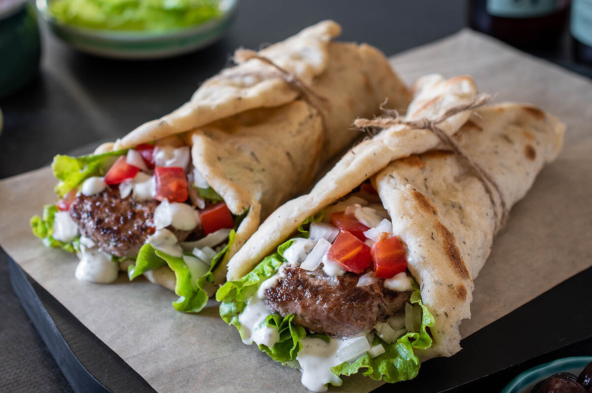

Ingredientes
- 1 kg de pechuga de pollo
- 1 taza de yogur natural (sin azúcar)
- Jugo de 1 limón
- 3 dientes de ajo machacados
- 1 cda de orégano
- 1 cdta de comino
- 1 cdta de pimentón (paprika)
- Sal y pimienta.
- Pan pita
- Rodajas de cebolla roja
- Tomate fresco
- Salsa Tzatziki (yogur, pepino rallado, ajo y limón).
Procedimiento
- Mezcla los ingredientes del marinado y cubre el pollo. Déjalo reposar al menos 4 horas (idealmente toda la noche). El ácido del yogur y el limón romperá las fibras y hará que el pollo sea extremadamente tierno.
- En lugar de piezas sueltas, apila los muslos uno sobre otro en una bandeja pequeña para que queden apretados (puedes usar un pincho de madera para mantenerlos firmes).
- Hornea a 200°C por unos 40-50 minutos. Al estar apilado, el centro quedará jugoso y el exterior se caramelizará
- Saca el bloque de pollo y córtalo en láminas muy finas con un cuchillo afilado, imitando el corte del asador vertical.
- Calienta el pan pita, unta Tzatziki, agrega el pollo, cebolla y tomate.
Imagen de Referencia
